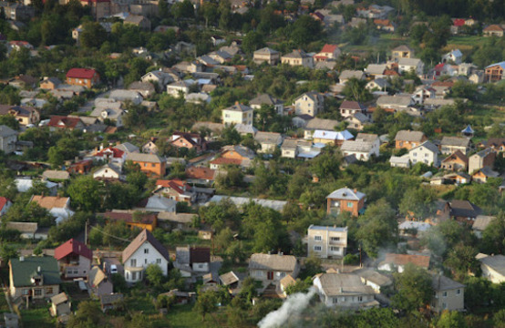
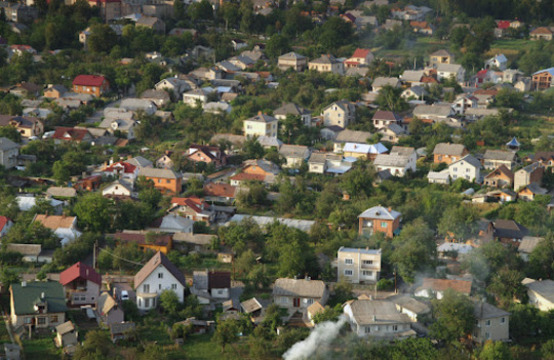
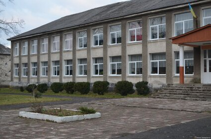
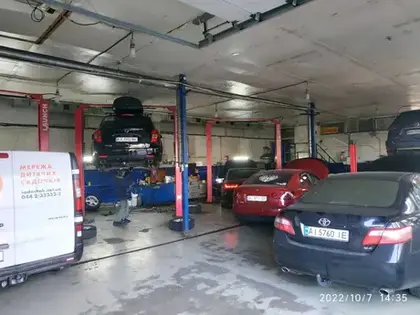
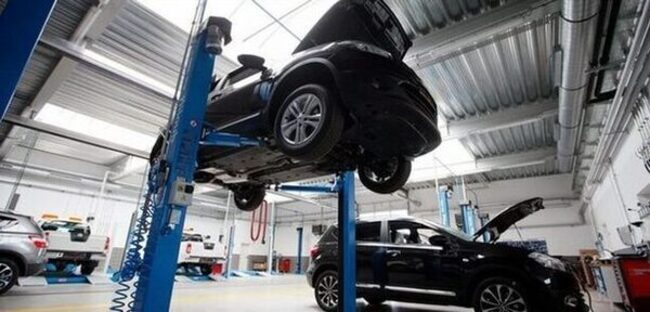

Я в минулому
Дитинство
Все моє дитинство пройшло в невеличкому селі біля Львова. Дитиною я був кмітливою,але завжди знаходив неприємності на свою голову)
Старші завжди любили мене, та зі сверстниками мені важко було знайти спільну мову, адже я ніколи не цікавився тим чим цікавились вони.
Зараз я вже більше захоплююсь якимось загальними речами та популярними темами, тож мені легше знаходити нові знайомства)
Але тоді
моє коло захоплень було більш вузьке, тому людей з якими я тоді зміг налагодити звязок, я ціную найбільше, адже наші цілі дуже часто збігаються.
 

Навчання
Навчався я в школі посередньо, ніколи не прагнув до високих оцінок. Якось в другому класі отримав похвального листа, відтоді і
зрозумів, що якщо все робити за правилами, можна отримувати похвалу, але якщо завжди слідувати правилам, то так не цікаво ))
Закінчив 11 клас у 2020 році, після того здобував освіту звязану з авто- мото-технікою. Ніколи не горів бажанням до цього.
Зараз теж навчаюсь на спеціальності,яка теж дуже і не вабить мене. Хто зна, можливо якби я краще вчився в школі, то зараз міг
б вчитись там,де було б дійсно цікаво..

Робота
Пісял закінчення навчання та до недавнього часу працював за професією, і сказати чесно, нові навички та робота в колі людей,
котрі були значно старші за мене, дало свої плоди. Не тільки те що стосується професії, але й цінні поради з життя зміг дізнатись я там.
Саме тому я вирішив рухатись та займатись тим що дійсно приносить ЗАДОВОЛЕННЯ, не лише для тіла, але й для душі
 
Теперішній час
На данний момент мені вже 21 рік, але вже через три місяці буду мати гарне число 22... Я ще молодий,ще багато чого не знаю та не вмію.
Але я ніколи не покладався на мотивацію, і знав що тільки дисципліна веде до успіху. Хочу продовжувати занурюватись в тему Front end ,
вчитись і вчитись. Підтримувати своє тіло у хорошій фізичній формі, ставати краще. Попереду мені потрібно ще через багато що пройти,
в цьому я заздрю більш старшим учасникам курсу, у деяких з яких буде набагато більше досвіду, ніж у мене.